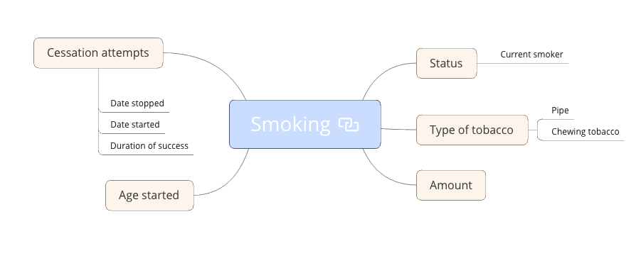

Clinical record modelling workshop Session 2
Agenda
| Topic | Dtn. | Start | End |
|---|---|---|---|
| Introduction | 5 | 09:00 | 09:05 |
| Templates in detail | 30 | 09:05 | 09:30 |
| Break | 10 | 10:00 | 10:10 |
| openEHR RM introduction | 35 | 10:10 | 10:45 |
| Mind-mapping/ modelling 'smoking' | 45 | 10:45 | 11:30 |
| Break | 15 | 11:30 | 11:45 |
| Archetypes in detail I | 45 | 11:45 | 12:30 |
| Lunch break | 40 | 12:30 | 13:10 |
| Archetypes in detail II | 45 | 13:10 | 13:55 |
| Break | 10 | 13:55 | 14:05 |
| Archetype and template governance | 30 | 14:05 | 14:35 |
| Apperta Clinical Knowledge Manager | 20 | 14:35 | 15:05 |
| Discussion | 30 | 15:05 | 15:30 |
Mindmapping Smoking - Getting started
-
Use any mind-mapping software of your choice - we tend it to use Xmind
-
As a group, take about 25 minutes to develop a maximal dataset for 'smoking status'
Use this image as a start point

- Rejoin the main channel and we will compare notes with the other group, and look at examples from the
Modelling a Smoking summary archetype
-
Open a web browser – Chrome or Firefox are best
-
Go to https://tools.openehr.org/designer (Best if you open this link in a new tab).
-
Login:
freshehr_trainingPassword:ad4freshtraining -
Create a new
EVALUATIONarchetype for 'smoking_status' and see how much of the mindmap you can correctly model.